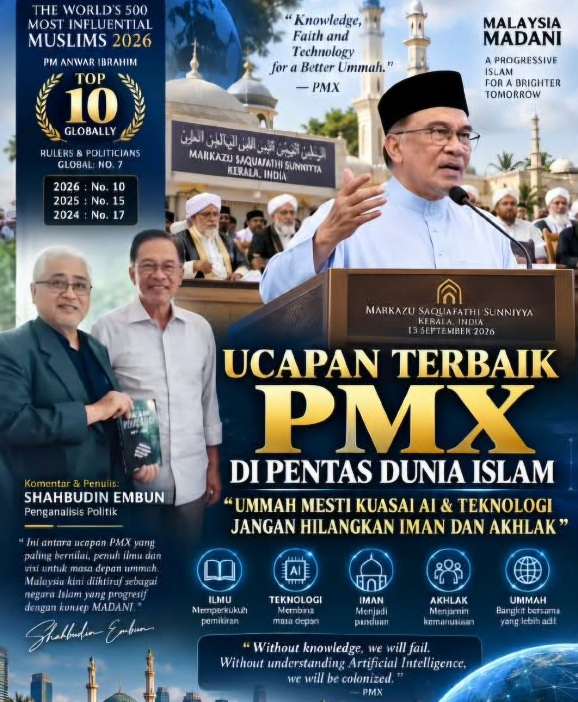

PMX: TOKOH MUSLIM KE-10 PALING BERPENGARUH DI DUNIA — SERU UMMAH KUASAI AI DAN TEKNOLOGI
SERU UMMAH KUASAI AI, TEKNOLOGI DAN DIGITAL INFRASTRUKTUR
Saya mengikuti dengan penuh perhatian ucapan YAB Dato’ Seri Anwar Ibrahim, Perdana Menteri Malaysia, ketika kunjungan beliau ke Markazu Saquafathi Sunniyya dan Maqam Syarif Sheikh Madavoor C.M. Valiyullahi di Kerala, India.
Pada pandangan saya, ini merupakan antara ucapan PMX yang amat bernilai untuk dihayati — bukan sahaja oleh umat Islam, malah oleh seluruh rakyat Malaysia.
Apa yang menarik perhatian saya ialah bagaimana PMX menghubungkan agama, ilmu, Artificial Intelligence (AI), transformasi digital, akhlak dan masa depan ummah dalam satu gagasan yang sangat jelas.
Dan lebih menarik, mesej tersebut disampaikan di hadapan para ulama, masyaikh dan tokoh ilmuwan Islam.
PMX bukan sekadar bercakap tentang masa kini.
Beliau sedang mengajak umat Islam berfikir tentang masa depan.
PMX SUDAH BERADA DALAM TOP 10 TOKOH MUSLIM PALING BERPENGARUH DI DUNIA
Kita harus melihat ucapan ini dalam konteks yang lebih luas.
Dalam edisi 2026 The World’s 500 Most Influential Muslims, yang diterbitkan oleh Royal Islamic Strategic Studies Centre (RISSC), Jordan, Dato’ Seri Anwar Ibrahim berada di kedudukan ke-10 daripada 500 tokoh Muslim paling berpengaruh di dunia.
Senarai rasmi Top 50 2026 turut meletakkan nama Anwar Ibrahim pada tangga ke-10. The Muslim 500 — Top 50 2026
Lebih membanggakan, kedudukan beliau menunjukkan peningkatan yang konsisten:
2024 — No. 17
2025 — No. 15
2026 — No. 10
Dalam kategori Rulers & Politicians, PMX pula berada di kedudukan ke-7 dunia.
Ini bukan sekadar angka.
Ia merupakan satu pengiktirafan terhadap pengaruh seorang pemimpin Malaysia dalam landskap dunia Islam dan antarabangsa.
Sebab itu saya melihat ucapan PMX di Kerala sebagai sesuatu yang sangat signifikan.
DARIPADA PALESTIN KEPADA AI — SUARA UMMAH YANG MESTI DIDENGAR
Antara perkara yang membentuk profil antarabangsa PMX ialah pendirian beliau terhadap isu Palestin serta peranan Malaysia dalam diplomasi dan keamanan serantau.
Namun terdapat satu lagi dimensi yang tidak kurang penting:
PMX mahu umat Islam bersedia menghadapi revolusi teknologi.
Dalam ucapannya di Kerala, PMX menekankan kepentingan umat Islam memahami perkembangan teknologi baharu, sains, transformasi digital dan AI.
Beliau turut mengingatkan bahawa kemajuan teknologi perlu berjalan bersama iman, nilai moral dan akhlak. Teks ucapan PMX di Kerala — Pejabat Perdana Menteri
JANGAN JADI PENGGUNA SAHAJA — KUASAI AI
Dunia sedang berubah dengan pantas.
AI bukan lagi teknologi masa depan.
AI sudah menjadi realiti hari ini.
Ia sedang mengubah pendidikan, kesihatan, ekonomi, kewangan, industri, media, pentadbiran kerajaan dan kehidupan manusia.
Jika umat Islam hanya menjadi pengguna teknologi yang dicipta oleh orang lain, kita akan terus bergantung kepada pihak luar.
Tetapi jika kita mampu melahirkan penyelidik, jurutera, saintis data, pakar teknologi dan pencipta AI sendiri, kita bukan sahaja menggunakan teknologi — kita turut menentukan arah masa depan teknologi.
Sebab itu seruan PMX amat penting:
UMMAH MESTI MENGUASAI AI.
Tetapi penguasaan itu mesti disertai ilmu, etika dan tanggungjawab.
AI TANPA AKHLAK BUKANLAH KEMAJUAN
Hari ini semua orang bercakap tentang AI.
Tetapi persoalan yang lebih besar ialah:
- AI digunakan untuk apa?
- Untuk meningkatkan pendidikan?
- Untuk membantu pesakit?
- Untuk meningkatkan produktiviti?
- Untuk memperkukuh ekonomi?
- Untuk membantu manusia?
- Atau untuk memanipulasi manusia?
Sebab itu teknologi mesti bergerak bersama nilai, etika dan tanggungjawab.
Kita tidak mahu generasi yang hebat menggunakan teknologi tetapi lemah dari segi akhlak.
Kita tidak mahu manusia menjadi hamba kepada teknologi yang mereka sendiri cipta.
Sebaliknya, kita mahu teknologi menjadi alat untuk meningkatkan martabat manusia.
Teknologi mesti maju.
Tetapi akhlak mesti menjadi panduan.
ULAMA JUGA TIDAK BOLEH TERPINGGIR DARIPADA REVOLUSI TEKNOLOGI
Saya amat tertarik apabila PMX membawa persoalan teknologi dan AI ke tengah-tengah dunia keilmuan Islam.
Ini satu perkara yang sangat penting.
Para ulama perlu memahami perubahan zaman.
Para ilmuwan perlu memahami teknologi.
Dan para teknolog pula perlu memahami nilai, etika dan tanggungjawab kemanusiaan.
Ini bukan soal menggantikan ilmu agama dengan AI.
Sebaliknya, ia adalah usaha memastikan ilmu agama dan teknologi dapat bergerak seiring dalam menghadapi cabaran zaman.
Dalam ucapan tersebut, PMX turut menekankan kepentingan memelihara turath, iaitu warisan keilmuan Islam, supaya ia terus menjadi panduan kepada generasi masa kini dan masa hadapan. Teks ucapan PMX di Kerala
Inilah keseimbangannya:
Kita mengejar masa depan tanpa melupakan akar kita.
MALAYSIA MADANI: ILMU, IMAN DAN TEKNOLOGI
Pada hemat saya, di sinilah gagasan Malaysia MADANI menjadi sangat relevan.
MADANI bukan bermaksud meninggalkan agama demi kemajuan.
Dan MADANI juga bukan bermaksud menolak kemajuan atas nama agama.
Sebaliknya, kita mencari titik pertemuan antara:
ILMU + IMAN + TEKNOLOGI + AKHLAK + KEMANUSIAAN.
Kemajuan sesebuah negara tidak sepatutnya diukur hanya melalui jumlah pusat data, pelaburan teknologi atau kelajuan internet.
Kita juga mesti bertanya:
- Apakah jenis manusia yang kita lahirkan melalui kemajuan tersebut?
- Adakah mereka berilmu?
- Adakah mereka berintegriti?
- Adakah mereka mempunyai akhlak?
- Adakah mereka memahami tanggungjawab terhadap masyarakat dan Tuhan?
Itulah persoalan besar yang mesti kita jawab.
MALAYSIA TIDAK BOLEH HANYA MENJADI PENGGUNA
PMX sendiri telah meletakkan AI sebagai salah satu agenda penting negara.
Dalam Majlis Peluncuran AI Malaysia, beliau menekankan kepentingan memperkukuh pendidikan STEM, matematik dan pendedahan AI kepada generasi muda. Majlis Peluncuran AI Malaysia — Pejabat Perdana Menteri
Mesejnya jelas.
Kita mahu anak-anak Malaysia bukan sekadar tahu menggunakan aplikasi AI.
Kita mahu mereka menjadi:
- AI engineers.
- AI researchers.
- Data scientists.
- Technology entrepreneurs.
- Digital innovators.
Dan lebih besar daripada itu, kita mahu mereka menjadi pencipta teknologi yang mampu memberi manfaat kepada dunia.
UMMAH: DARIPADA PENONTON KEPADA PENCIPTA
Umat Islam mempunyai sejarah yang panjang dalam dunia ilmu dan tamadun.
Daripada matematik kepada perubatan.
Daripada astronomi kepada falsafah dan sains.
Warisan intelektual Islam membuktikan bahawa umat Islam bukan asing dalam dunia ilmu.
Maka cabaran generasi hari ini bukan sekadar mengingati kegemilangan masa lalu.
Kita mesti mencipta kegemilangan baharu.
Dalam era AI, kita tidak boleh hanya menjadi penonton.
Kita tidak boleh hanya menjadi pengguna.
Kita mesti mempunyai kemampuan untuk menjadi pencipta, penyelidik, pemikir dan pembina masa depan.
Dengan ilmu.
Dengan iman.
Dengan akhlak.
Dengan teknologi.
Dan dengan keberanian.
UCAPAN PMX YANG WAJAR DIBACA, BUKAN SEKADAR DITONTON
Sebab itu saya berpandangan bahawa video ucapan PMX di Kerala ini tidak sepatutnya berhenti sebagai kandungan TikTok atau media sosial semata-mata.
Ia wajar dibaca.
Ia wajar difahami.
Ia wajar dibincangkan.
Ia wajar dikongsikan kepada generasi muda.
Kerana mesejnya jauh lebih besar daripada politik.
Ia menyentuh persoalan tentang masa depan umat Islam dalam dunia AI.
Persoalannya bukan lagi sama ada AI akan mengubah dunia.
AI sedang mengubah dunia.
Persoalannya ialah:
ADAKAH UMMAH AKAN MENJADI PENGGUNA TEKNOLOGI, ATAU TURUT MENJADI PENCIPTA MASA DEPAN?
TAHNIAH PMX
Sebagai rakyat Malaysia, saya berasa bangga melihat YAB Dato’ Seri Anwar Ibrahim berada di tangga ke-10 dalam The World’s 500 Most Influential Muslims 2026 — meningkat daripada tangga ke-15 pada 2025 dan ke-17 pada 2024.
Bagi saya, pengiktirafan ini bukan sekadar satu pencapaian peribadi.
Ia membawa satu amanah yang lebih besar.
Amanah untuk terus membawa Malaysia menjadi sebuah negara yang maju, moden, berilmu, berteknologi, berakhlak dan tetap berpaksikan nilai agama serta kemanusiaan.
Inilah wajah Malaysia MADANI yang kita mahu lihat.
Islam tidak menghalang kemajuan.
Islam memandu kemajuan.
Dan dalam era AI ini, mesej PMX kepada ummah amat jelas:
KUASAILAH ILMU.
KUASAILAH TEKNOLOGI.
JANGAN HILANGKAN IMAN DAN AKHLAK.
Tahniah YAB Dato’ Seri Anwar Ibrahim, PMX.
Ucapan terbaik di Kerala membuktikan bahawa perbincangan mengenai masa depan umat Islam bukan hanya mengenai politik dan kuasa.
Ia juga mengenai ilmu, teknologi, pendidikan, AI dan pembinaan tamadun baharu.
Dan Malaysia, melalui gagasan MADANI, mempunyai peluang untuk menjadi sebahagian daripada perjalanan tersebut.
Penganalisis Politik